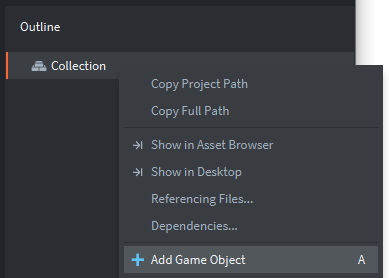
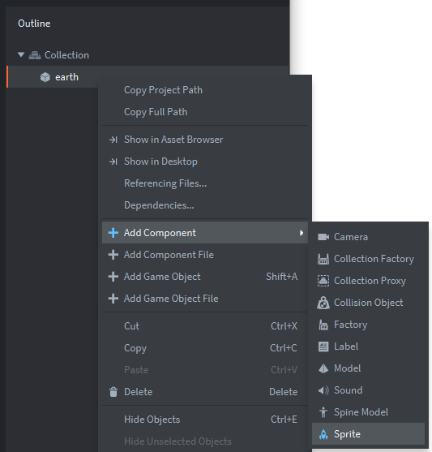

Tutorials for 2D games projects
Incoming | Creating the game objects: earth
- In the assets panel, in the 'main' folder, double click, 'main.collection'.
- In the outline panel, right click, 'Collection' and select, 'Add game object'.

- In the properties panel, change the 'Id' of the game object to be, 'earth'.
- In the properties panel, change the 'Position' attributes to be: X: 480, Y: 320. This will put the game object in the middle of the screen.
- In the outline panel, right click the 'earth' game object and select, 'Add Component', 'Sprite'.

- In the properties panel, change the 'Image' property to, '/main/graphics.atlas' (use the three dots icon to make this easier).
- In the properties panel, change the 'Default Animation' property to, 'earth'.
- Save the changes by pressing CTRL-S or 'File', 'Save All'.
- Run the program by pressing F5 or choosing, 'Debug', 'Start / Attach' from the menu bar.
If everything is working you should see the earth rotating in the middle of the screen. While we are working on the earth object, now is a good time to create the collision window so we can use messages later to know when a comet has hit the earth. Stage 3b >
 Craig'n'Dave | Version 1.3
Craig'n'Dave | Version 1.3